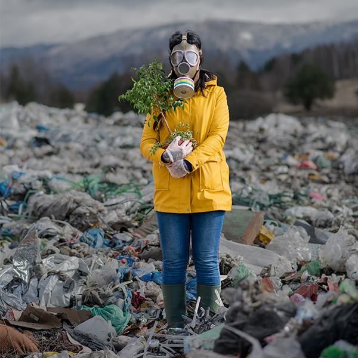

Mission
Educating communities through creative mediums.
Read MoreThree pillars that guide every project, every workshop, and every puppet show we produce.

we blend creativity, education, and environmental stewardship to build a sustainable future in Jordan. Through innovative projects like puppet shows, open theatre performances, and hands-on workshops, we address critical environmental issues and inspire the next generation to embrace eco-friendly practices.
Learn MoreFrom puppetry to stand-up comedy and alternative transport, we use every creative tool to drive environmental action.
Equal access for all genders, ages, and communities.
Long-term, impactful solutions to environmental challenges.
Art, performance, and social media to communicate complex issues.
Collaborative workshops, performances, and projects.
Every show, every workshop, every conversation moves the needle on environmental awareness across Jordan.
Our social media campaigns have reached over 500,000 individuals, spreading awareness about sustainability and green living.
Learn moreMore than 170,000 people have engaged with our programs, workshops, and digital campaigns.
Learn more